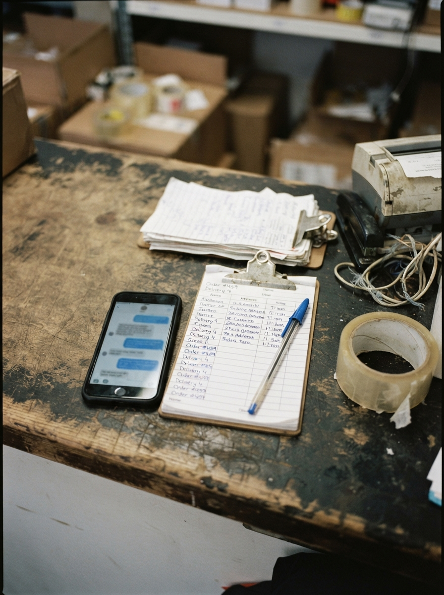

1 OCT
2026
La fecha en que cambia la cuenta
Tema centralWhatsApp · Meta · precios
deja de regalar
El 1 de octubre las respuestas que no son plantilla oficial dejan de ser un favor. Cada una entra a la cuenta.
Hasta ahora el chat era “gratis” en la práctica.
Sigue en 04